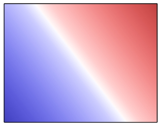
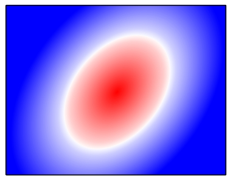

class Tioga::Shading
These are the methods for doing shaded regions in PDF graphics.
Public Instance Methods
Draws a color blend that varies along a linear axis between two endpoints and extends indefinitely perpendicular to that axis to the limits of the current clipping region. The color sequence is given by a colormap such as produced by create_colormap. Color position 0.0 of the colormap goes at the start point, color position 1.0 of the colormap goes at the end point, and the intermediate colors are placed at the corresponding intermediate locations along the line joining the start point to the end point.
If the 'extend_start' flag is true, then the start
color is extended indefinitely beyond the start point to the limits of the
clipping region. Similarly, if the 'extend_end' flag is
true, the end color is extended indefinitely beyond the end
point.
See also radial_shading.
Dictionary Entries
'x_start' => a_float # x coordinate of the start of the gradient 'y_start' => a_float # y coordinate of the start of the gradient 'start' => [ x_start, y_start ] # coordinates of the start of the gradient 'start_point' # alias for 'start' 'x_end' => a_float # x coordinate of the end of the gradient 'y_end' => a_float # y coordinate of the end of the gradient 'end' => [ x_end, y_end ] # coordinates of the end of the gradient 'end_point' # alias for 'end' 'colormap' => a_colormap # determines the shading 'color_map' # alias for 'colormap' 'extend_start' => true_or_false # default false 'extend_end' => true_or_false # default false
Example
def axial_shading t.clip_rect(0, 0, 1, 1) t.axial_shading( 'start_point' => [0, 0], 'end_point' => [1, 1], 'colormap' => t.mellow_colormap) end

# File lib/Tioga/Shading.rb, line 46 def axial_shading(dict) end
Draws a color blend that varies between two circles. The color sequence is given by a colormap such as produced by create_colormap. Color position 0.0 of the colormap goes at the start circle, color position 1.0 of the colormap goes at the end circle, and the intermediate colors are placed on corresponding intermediate circles. The circles can be stretched and rotated by the 'x_hat' and 'y_hat' arguments which tell how to map unit vectors in x and y respectively.
If the 'extend_start' flag is true, then the start
color is extended beyond the start circle. Similarly, if the
'extend_end' flag is true, the end color is extended
beyond the end point. Note that either of the starting and ending circles
may be larger than the other. If the shading is extended at the smaller
end, the family of blend circles continues as far as the radius of the
blend circle is greater than 0; if the shading is extended at the larger
end, the blend circles continue until the radius of the blend circle is
large enough to encompass the shading's entire bounding box. Extending
the shading can thus cause painting to extend beyond the areas defined by
the two circles themselves.
See also axial_shading.
Dictionary Entries
'x_start' => a_float # x coordinate of the center of the start circle 'y_start' => a_float # y coordinate of the center of the start circle 'radius_start' => a_float # the radius of the start circle 'start_radius' # alias for 'radius_start' 'start' => [ x_start, y_start, radius_start ] 'start_circle' # alias for 'start' 'x_end' => a_float # x coordinate of the center of the end circle 'y_end' => a_float # y coordinate of the center of the end circle 'radius_end' => a_float # the radius of the end circle 'end_radius' # alias for 'radius_end' 'end' => [ x_end, y_end, radius_end ] 'end_circle' # alias for 'end' 'colormap' => a_colormap # determines the shading 'color_map' # alias for 'colormap' 'x_hat' => [x, y] # default is [1, 0] 'xhat' # alias for 'x_hat' 'y_hat' => [x, y] # default is [0, 1] 'yhat' # alias for 'y_hat' 'extend_start' => true_or_false # default false 'extend_end' => true_or_false # default false
Example
def radial_shading t.clip_rect(0, 0, 1, 1) t.radial_shading( 'x_hat' => [0.5, 0.2], 'y_hat' => [0.0, 0.75], 'start_circle' => [0.75, 0.65, 0.9], 'end_circle' => [0.75, 0.65, 0.0], 'colormap' => t.intense_colormap, 'extend_start' => true) end

# File lib/Tioga/Shading.rb, line 95 def radial_shading(dict) end